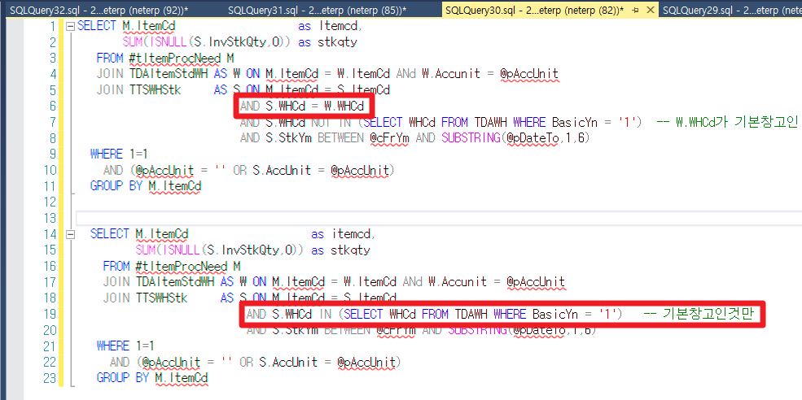

시스템베이스 - 소요량산출* / 현재고 조회
현재고 조회 : 재고현황(계산서)* ylwa09042_sb
소요량산출* 자재조회 : SPPMatNeed2Qry_sb
select Temp.Itemcd, SUM(ISNULL(Temp.Stkqty,0))
From ( SELECT
M.ItemCd as Itemcd,
SUM(ISNULL(S.InvStkQty,0)) as stkqty
FROM #tItemProcNeed M
--JOIN tdaitemmaster W ON M.ItemCd = W.ItemCd
JOIN TDAItemStdWH W ON M.ItemCd = W.ItemCd ANd W.Accunit = @pAccUnit
JOIN TTSWHStk S ON M.ItemCd = S.ItemCd
--AND S.AccUnit = W.Accunit 230726 품목테이블 AccUnit이 1만 등록되어 있어 JOIN시키지 않음 DHKOO
AND S.WHCd = W.WHCd
--AND S.WHCd IN (SELECT WHCd FROM TDAWH WHERE BasicYn = '1') -- 기본창고인것만
AND S.WHCd NOT IN (SELECT WHCd FROM TDAWH WHERE BasicYn = '1') -- W.WHCd가 기본창고인 경우 중복으로 데이터 생성 => 해당 구문 추가 24.03.28 SJPARK
AND S.StkYm BETWEEN @cFrYm AND SUBSTRING(@pDateTo,1,6)
--AND S.StkType = '1'
WHERE 1=1
AND (@pAccUnit = '' OR S.AccUnit = @pAccUnit)
GROUP BY M.ItemCd
Union all
SELECT
M.ItemCd as itemcd,
SUM(ISNULL(S.InvStkQty,0)) as stkqty
FROM #tItemProcNeed M
--JOIN tdaitemmaster W ON M.ItemCd = W.ItemCd
JOIN TDAItemStdWH W ON M.ItemCd = W.ItemCd ANd W.Accunit = @pAccUnit
JOIN TTSWHStk S ON M.ItemCd = S.ItemCd
--AND S.AccUnit = W.Accunit 230726 품목테이블 AccUnit이 1만 등록되어 있어 JOIN시키지 않음 DHKOO
AND S.WHCd IN (SELECT WHCd FROM TDAWH WHERE BasicYn = '1') -- 기본창고인것만
AND S.StkYm BETWEEN @cFrYm AND SUBSTRING(@pDateTo,1,6)
WHERE 1=1
AND (@pAccUnit = '' OR S.AccUnit = @pAccUnit)
GROUP BY M.ItemCd ) temp
group by Temp.Itemcd
